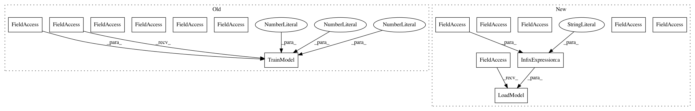

6609bfaa3d158ad613ec4c2c29bcb8f4f6caf7c3,SpeechModel22.py,,,#,348
Before Change
ms = ModelSpeech(datapath)
//ms.LoadModel(modelpath + "m22\\speech_model22_e_0_step_6500.model")
ms.TrainModel(datapath, epoch = 50, batch_size = 4, save_step = 500)
//ms.TestModel(datapath, str_dataset="test", data_count = 64, out_report = True)
//r = ms.RecognizeSpeech_FromFile("E:\语音数据集\ST-CMDS\ST-CMDS-20170001_1-OS\\20170001P00241I0052.wav")
//r = ms.RecognizeSpeech_FromFile("E:\\语音数据集\\wav\\train\\A11\\A11_167.WAV")
//r = ms.RecognizeSpeech_FromFile("E:\\语音数据集\\wav\\test\\D4\\D4_750.wav")
After Change
ms = ModelSpeech(datapath)
ms.LoadModel(modelpath + "m22_2\\speech_model22_e_0_step_209000.model")
//ms.TrainModel(datapath, epoch = 50, batch_size = 4, save_step = 500)
//ms.TestModel(datapath, str_dataset="test", data_count = 64, out_report = True)
//r = ms.RecognizeSpeech_FromFile("E:\\语音数据集\\ST-CMDS-20170001_1-OS\\20170001P00241I0053.wav")
//r = ms.RecognizeSpeech_FromFile("E:\\语音数据集\\ST-CMDS-20170001_1-OS\\20170001P00020I0087.wav")
In pattern: SUPERPATTERN
Frequency: 4
Non-data size: 15
Instances
Project Name: nl8590687/ASRT_SpeechRecognition
Commit Name: 6609bfaa3d158ad613ec4c2c29bcb8f4f6caf7c3
Time: 2018-05-01
Author: 3210346136@qq.com
File Name: SpeechModel22.py
Class Name:
Method Name:
Project Name: nl8590687/ASRT_SpeechRecognition
Commit Name: a99247df09aaa929a1c23e0b74747036e789f07b
Time: 2018-04-16
Author: 3210346136@qq.com
File Name: SpeechModel2.py
Class Name:
Method Name:
Project Name: nl8590687/ASRT_SpeechRecognition
Commit Name: fb89aabbad9c9786c889998d3ed0f738c711070f
Time: 2018-05-11
Author: 3210346136@qq.com
File Name: SpeechModel22.py
Class Name:
Method Name:
Project Name: nl8590687/ASRT_SpeechRecognition
Commit Name: caefbc835ab2864a4803e2b9211d0425d8b3921c
Time: 2018-05-28
Author: 3210346136@qq.com
File Name: SpeechModel25.py
Class Name:
Method Name: